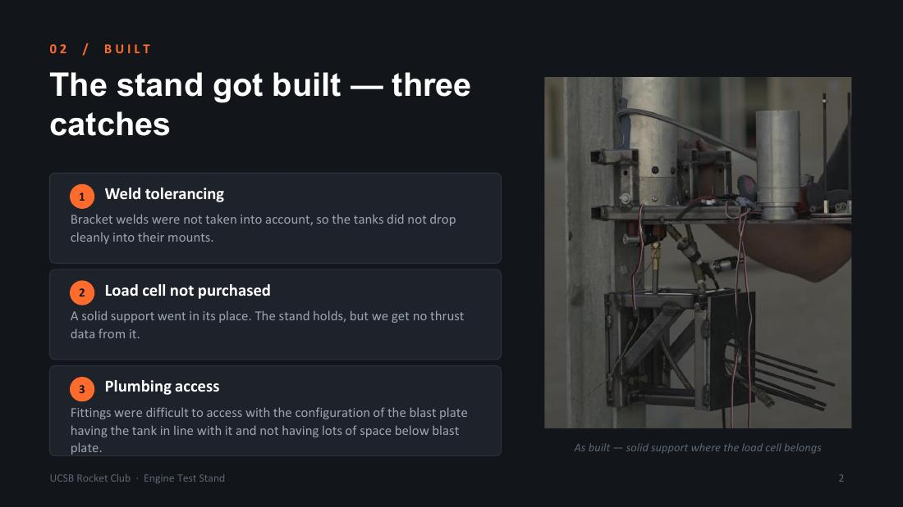
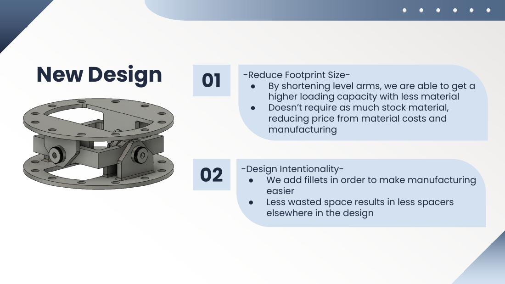
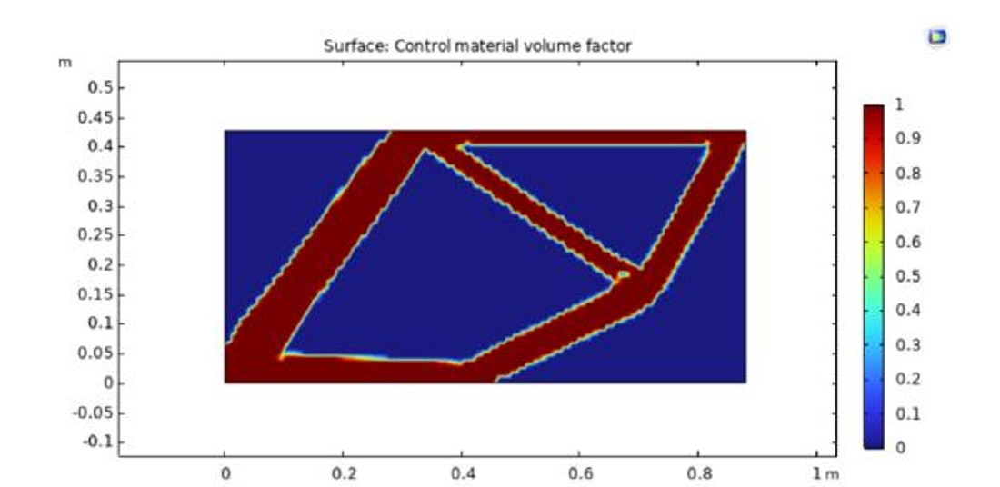
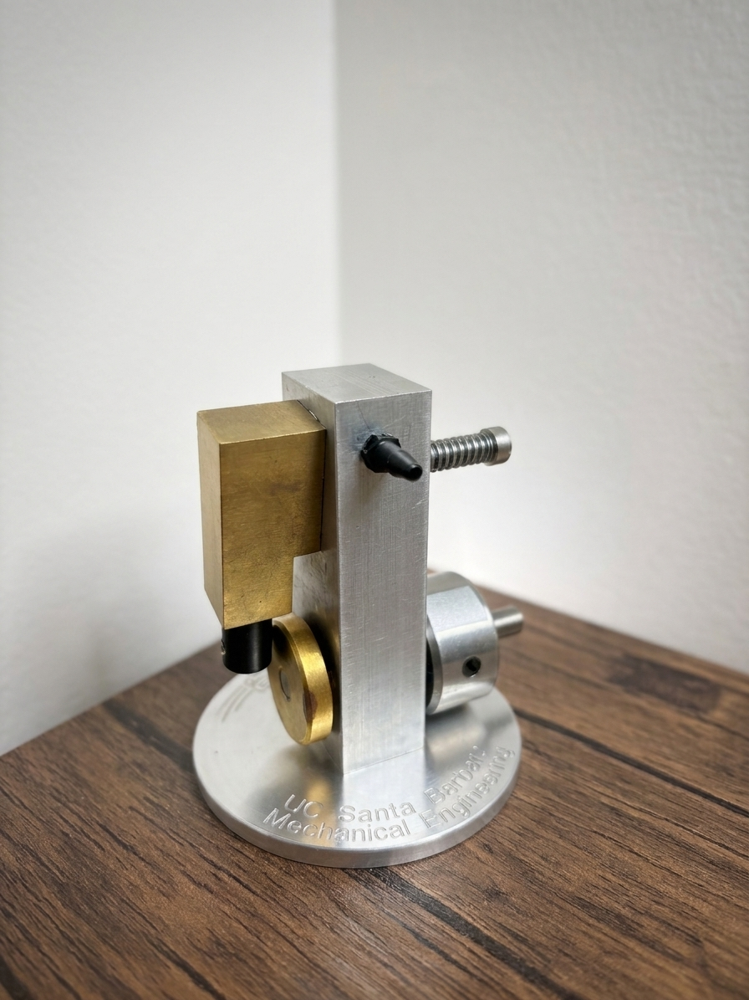

Mechanical Engineering · UC Santa Barbara
I'm a senior mechanical engineering student at UCSB graduating in June 2027, focused on aerospace hardware and manufacturing. Most of what I work on starts as a CAD model and ends on a test stand — which is usually where the interesting problems show up.
01 / UCSB Rocket Club
Design, fabrication, and post-build review of a static fire stand
Build a static test stand capable of holding both propellant tanks and a liquid engine through hot fire, with a load cell in the thrust path so the club could finally measure real engine performance instead of inferring it.
The stand got built, but three things didn't survive contact with the shop floor:
The real lesson wasn't the welds. It was that the instrumentation got treated as an add-on instead of a requirement — so the one subsystem that justified the build is the one that got cut.
I'm driving a redesign into a modular stand: the load cell designed into the thrust path from the start with a clear integration path for the rest of the sensors, the structure spaced out to open up plumbing access and tank mounting, and a mounting scheme that accepts any tank or engine configuration the club builds next.
Read the build review (PDF)
02 / UCSB Rocket Club — Project HALO
Gimbal redesign, actuator selection, and FEA verification for a vertically-landing vehicle
HALO is the club's vertically-landing rocket. The TVC subsystem keeps the vehicle vertical through takeoff, flight, and landing by counteracting rotational impulses — a gimbaled thrust chamber driven by a pair of linear actuators, which also has to carry the full thrust load of the engine.
The new gimbal shortens the lever arms, which raises loading capacity while using less material — less stock to buy and less to machine. Fillets were added for manufacturability, and tightening up the wasted space removed the need for spacers elsewhere in the assembly.
The yoke and ring are joined by a steel shoulder screw with a distorted-thread flange locknut for vibration resistance. A needle-roller bearing takes the friction out of the ring–yoke interface — chosen over a ball bearing for its radial load capacity — retained by snap rings on the inner diameter and press fit on the outer.
The previous iteration specified a minimum actuator force of 400 lbf, which limited the field to slow, heavy, expensive units. Reworking the problem showed that number was a substantial overestimate; the real requirement is ~140 lbf at 2 in/s minimum. That reopened the trade space, and the selection landed on a Festo electric linear actuator (1000 N, 50 mm stroke, 90 mm/s, 2.64 kg) — still the most expensive line item on the subsystem, and currently the subject of a sponsorship request.
Mounting the actuators at their optimal speed and force geometry coupled them to each other, which both raises the force each one sees and demands a far more complex control scheme. Aligning the actuator tailstock mounts with the gimbal's center of rotation decoupled them.
Every major load-bearing component went through FEA in ANSYS under engine loading. Both yoke pieces pass comfortably against AL 7050 and AL 7075 allowables. The shoulder screw concentrates stress at its required cuts — not enough to fail it, but enough to drive the decision to use alloy steel screws rather than stainless. Vibration and thermal flux are not yet in the model; they're covered for now by conservative load estimates and a generous factor of safety, and are the first thing I want in the next round.
Read the HALO design review (PDF)
03 / Computational Analysis
COMSOL Multiphysics · 2D and 3D SIMP optimization across four riding load cases
Start from a solid rectangular block of aluminum and let the solver decide what a bicycle frame should look like. The objective: minimize internal strain energy subject to a hard cap on how much mass is available to build the structure.
A fixed pin at the lower left stands in for the clamped rear wheel; a horizontal roller at the upper right represents the head tube. Four load cases spanned realistic riding: flat cruising (1000 N seat / 300 N crank), fast pedaling (700 N / 600 N), an intense uphill sprint, and hard braking.
Under flat cruising the optimizer independently converged on a strong rear triangle feeding load straight into the fixed support — essentially the front-and-rear-triangle geometry of production bike frames, arrived at from a rectangle. Max nominal stress was ~0.55 MPa against a 214 MPa compressive yield, and seat deflection dropped to 0.0053 mm, roughly 5× less than the unoptimized block at the same mass.
Shifting load toward the crank in the fast-pedaling case produced a markedly more symmetric frame with a stiffer lower structure — the solver responding exactly as intuition would predict. Across all cases the highest stresses clustered at the seat post junction and the rear triangle interface: in a real frame, welded joints, and the places I'd expect trouble first.
The result I care about isn't the geometry — it's that a solver with no knowledge of bicycles rediscovered the double-triangle frame from load paths alone.

04 / UCSB ME 12S
Manual mill and lathe work to a tolerance stack that has to actually run
ME 12S is UCSB's hands-on manufacturing course, and the air motor is its final piece: a working reciprocating engine driven by shop air, made from raw aluminum and brass stock on manual machines. Mine is pictured here on its engraved aluminum base.
Nothing on this part is forgiving. The motor only spins if the bore-to-piston clearance, the crank throw, and the valve timing all land inside tolerance at the same time — the inlet port has to open and close at the right crank angle or it stalls. It's the clearest demonstration I have that I can hold a tolerance on a manual machine and build something that works, not just something that measures correctly.
Swap this section's text for your own account of the build — operations you actually ran, the tolerances you held, and anything that went wrong and got fixed. That detail is what makes a machining project credible to a reader.
